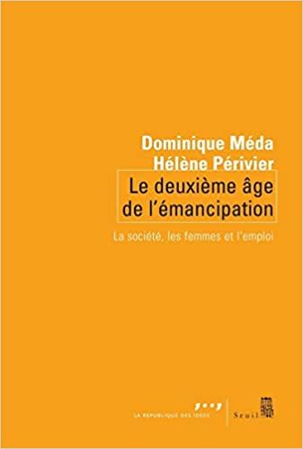

L’économie féministe. Pourquoi l’économie a besoin du féminisme et vice versa, Presses de Sciences Po, 2020. ISBN: 139782724626759
Refonder le système de protection sociale. Pour une nouvelle génération de droits sociaux,, Presses de Sciences Po, with Bernard Gazier and Bruno Palier, 2014.ISBN: 139782724616255
European labour markets in time of crisis: A gender perspective, Revue de l’OFCE, n°133, co-edited with Antoine Math and Anne Eydoux. ISBN: 978-2-312-00836-3
Les discriminations entre les femmes et les hommes, Presses de Sciences Po, 2011. ISBN: 9782724612011

Le deuxième âge de l’émancipation. La société, les femmes et l’emploi, La République des Idées, Seuil, with Dominique Méda, 2007. ISBN:2020917629
Travail des femmes et inégalités, Revue de l’OFCE n°90, 2004, co-edited with Françoise Milewski